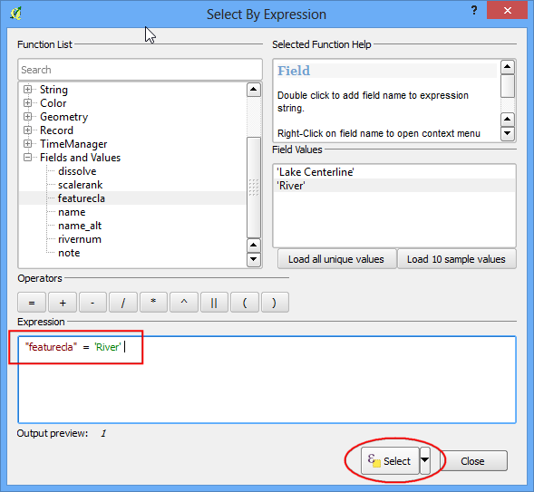
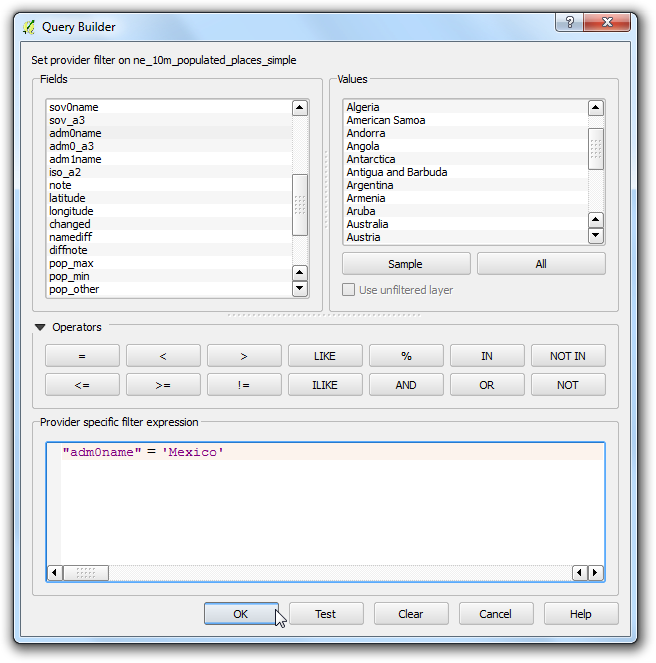

지도만들기
종종 출력이나 인쇄를 해야할 지도를 만들 필요가 있습니다. QGIS는 인쇄 구성기 Print Composer 라고 하는 강력한 툴이 있어서 GIS 레이어와 패키지를 지도로 만들 수 있습니다.
작업 개요
이 예제에서는 지도 끼워넣기, 그리드, 방위화살표, 스케일바 그리고 라벨과 같은 표준적인 지도 요소들을 가지고 어떻게 일본지도를 만드는 지를 보여줍니다.
데이터 획득
예제에서는 Natural Earth 데이터셋을 사용할 것인데 특별히 Natural Earth Quick Start Kit 입니다. 이것은 아름답게 스타일링 된 전 지구적 레이어로써 QGIS로 바로 불러올 수 있습니다.
`Natural Earth Quickstart Kit <http://kelso.it/x/nequickstart>`_를 다운로드 하십시오.
데이터 출처: [NATURALEARTH]
과정
Natural Earth Quick Start Kit 데이터를 다운로드하고 압축해제 하십시오. QGIS를 구동시키십시오. 메뉴 파일 –> 프로젝트 열기 :menuselection:`File –> Open Project`를 누르십시오.

Natural Earth 데이터를 압축해제한 디렉토리를 찾으십시오. 파일 :file:`Natural_Earth_quick_start_for_QGIS.qgs`를 보시게 될 것입니다. 이것은 프로젝트 파일로 QGIS 문서 형식의 스타일링된 레이어가 포함되어 있습니다. 열기 :guilabel:`Open`를 누르십시오.

QGIS 캔버스의 TOC에서 많은 레이어와 스타일링된 세계지도를 보게됩니다. 만약 캔버스의 상단에서 에러 메세지를 보면 그냥 엑스표기를 눌러 닫기 바랍니다.

이 예제에서는 일본 지도를 만들 것입니다. 확대 Zoom In 단추를 누르고 일본 근처를 중심으로 사각형을 그려 지역을 확대합니다.

이 지도에서 필요가 없는 몇 지도 레이어를 끌 수 있습니다. 10m_geography_marine_polys 와 ``10m_admin_0_map_units``레이어 옆에 있는 박스를 해제하십시오. 지도를 인쇄하기 알맞게 만들기 전에, 적절한 투영을 선정할 필요가 있습니다. 이 데이터셋은 단위가 degree인 지리좌표계(GCS)입니다. 이것은 거리가 킬로미터나 마일로 표현하기에는 적절치 않습니다. 해당지역의 왜곡을 최소화하고 단위를 미터로 표현하기 위해 투영된 좌표계를 사용할 필요가 있습니다. Universal Transverse Mercator (UTM)는 투영좌표계로 적절한 선택입니다. 이것은 전 지구적으로 사용하므로 기본적으로 사용할 수 있고, 해당 지역의 왜곡을 최소화 할 수 있는 지역을 포함하는 UTM 존을 선택할 수 있습니다. 여기에서는 UTM 존 54N을 사용할 것입니다. QGIS 윈도창 우측 아래에 있는 좌표계 상태 CRS Status 단추를 누르십시오.
주석
일본의 경우 Japan Plane Rectangular CS이 왜곡을 최소화할 수 있도록 만들어진 투영좌표계 (CRS) 입니다. 이것은 18개 구역으로 나뉘어져 있습니다. 그리고 만약 일본 내에서도 보다 작은 지역을 대상으로 작업을 한다면 이 좌표계를 사용하는 것이 더 나을 것입니다.

실시간 좌표계 변환 활성화 Enable on-the-fly CRS Transformation 상자를 체크하십시오. 필터 Filter 상자에 ``Tokyo utm zone54n``를 입력하십시오. 일단 결과를 보고, :guilabel:`Tokyo / UTM Zone 54N - EPSG:3095`를 선택하시오. 적용 :guilabel:`Apply`을 누릅니다.

이제 지도 조합을 시작할 수 있습니다. 메뉴 프로젝트 –> 새로운 인쇄 구성기 :menuselection:`Project –> New Print Composer`로 가십시오.

인쇄 구성기에 새로운 제목을 넣으라는 표시가 나타납니다. 이곳을 비우고 확인 :guilabel:`Ok`을 누르십시오.
주석
제목 칸을 비우면 구성기 1 ``Composer 1``과 같이 기본적인 이름이 할당될 것입니다.

인쇄구성기 창에서 레이아웃을 최대한 확장시키기 위해 :guilabel:`Zoom full`를 누릅니다. 이제 QGIS 캔버스에서 보이는 지도를 구성기로 가져옵니다. 메뉴 레이아웃 –> 새 지도 추가 :menuselection:`Layout –> Add Map`로 갑니다.

일단 새지도 추가 Add Map 단추가 활성화 되면 왼쪽 마우스 단추를 누른 채 지도를 삽입하고자 하는 위치에 사각형을 그립니다.

QGIS 메인 캔버스에서 사각형창의 지도가 표현될 것입니다. 표현된 지도는 대상지역 전체를 포함하지는 않을 것입니다. 창에서 지도를 이동시키기 위해 메뉴 레이아웃 -> 아이템 이동 을 선택하고 구성기 중앙에 위치시킵니다.

주어진 지도에 맞게 확대정도를 결정합시다. 아이템 속성 Item Properties 탭을 누르고 축척 Scale 값에 7000000 를 입력합니다.

이제 도쿄지역을 확대한 지도를 삽입할 것입니다. 메인 QGIS창에서 레이어에 어떤 변화를 시키기 전에 지도항목 레이어 고정 Lock layers for map item 와 Lock layer styles for map item 를 체크합니다. 이것은 만약 어떤 레이어를 끄거나 혹은 스타일을 변화시킨다해도 뷰는 변하지 않는다는 것을 확실하게 할 것입니다.

QGIS 메인 창으로 전환합니다. 확대 Zoom In 단추를 이용하여 도쿄지역을 확대합니다.

``ne_10m_populated_places``레이어로부터 나온 몇몇 라벨이 중복됩니다. 이 뷰는 끌 수 있습니다.

이제 지도를 삽입을 준비합니다. 인쇄 구성기 Print Composer 창으로 전환합니다. 메뉴 레이아웃 -> 지도 추가 :menuselection:`Layout –> Add Map`로 갑니다.

삽입하고 싶은 지도의 위치에 사각형을 그립니다. 인쇄 구성기에는 2개의 지도 객체가 있음을 알게됩니다. 변화를 시킬때마다 정확한 지도를 선택했는지를 확인해야 합니다. 아이템 Items 패널에서 추가한 Map 1 객체를 선택합니다. 아이템 속성 Item properties 탭을 선택합니다. 프레임 Frame 패널까지 내려가서 그 옆에 있는 상자를 체크합니다. 프레임의 색상과 두께를 바꿀 수 있는데 그러면 지도의 배경으로부터 구별하기가 쉽습니다.

인쇄구성기의 좋은 특징은 삽입한 지도를 주변지역으로 부터 자동적으로 밝게 할 수 있다는 것입니다. 아이템 Items 패널에서 Map 0 객체를 선택하십시오. 아이템 속성 Item properties`탭에서 오버뷰 :guilabel:`Overviews 부분으로 내려가십시오. 새로운 오버뷰 추가 Add a new overview 단추를 누르십시오.

지도 프레임 Map Frame`으로 ``Map 1``을 선택하십시오. 이것은 ``Map 1` 객체에서 보여지는 범위의 지도를 현재의 객체인 ``Map 0``로 인쇄 구성기가 반드시 강조한다는 의미입니다.

이제 삽입이 준비된 지도에 그리드와 얼룩경계를 메인지도에 추가할 것입니다. 아이템 Items 패널에서 ``Map 0``객체를 선택하십시오. 아이템 속성 Item properties 탭에서 격자틀 Grids`부분으로 스크롤 다운합니다. 새 격자 추가 :guilabel:`Add a new grid 단추를 누릅니다.

격자선은 기본적으로 현재 선택된 지도 투영과 같은 단위 및 투영을 사용합니다. 그러나 격자 선을 디그리로 표현하는 것이 더욱 일반적이고 유용합니다. 격자를 변경하기 위해 다른 좌표계를 선택할 수 있습니다. 좌표계 CRS 옆에 있는 변경 change... 단추를 누릅니다.

좌표계 선택 Coordinate Reference System Selector 다이알로그에서, 필터 Filter 상자에 ``4326``을 입력합니다. 입력결과 좌표계로 ``WGS84 EPSG:4326``을 선택합니다. 확인 :guilabel:`OK`을 누릅니다.

간격 Interval 값으로 X 와 Y 방향 둘 다 5 도를 선택합니다. 격자선이 보이는 곳까지 오프셋 Offset 값을 변경하여 조정할 수 있습니다.

격자 테두리 Grid frame`까지 스크롤 다운하여 내려갑니다. 그리고 취향에 맞는 프레임 스타일을 선택합니다. 또한 좌표값 그리기 :guilabel:`Draw coordinates 상자를 체크합니다.

좌표값을 읽을 수 있을 때가지 지도 프레임까지의 거리 Distance to map frame 값을 조정합니다. 좌표 정밀도 Coordinate precision`를 ``1` 로 바꿔서 좌표값이 소숫점 한자리까지 표현할 수 있도록 합니다.

이제 지도에 방위표를 추가할 것입니다. 프린터 컴포저는 매우 훌륭한 지도와 관련된 이미지 - 다양한 유형의 방위화살표 모음을 가지고 있습니다. 메뉴 레이아웃 -> 이미지 추가 :menuselection:`Layout –> Add Image`를 누릅니다.

마우스 왼쪽 단추를 누른 채, 지도 캔버스의 우측 상단에 사각형을 그립니다. 오른쪽 패널에서 아이템 속성 Item Properties 탭을 누르고 디렉토리 검색 :guilabel:`Search directories`을 확장하고 적당한 방위화살표를 선택합니다.

이제는 스케일바를 추가할 차례입니다. 메뉴 레이아웃 –> 스케일바 추가 :menuselection:`Layout –> Add Scalebar`를 누르십시오.

스케일바를 나타나게 하려는 위치의 레이아웃을 누릅니다. 아이템 속성 Item Properties 탭에서 나타내려는 스케일바가 정확한 지도요소로 선택되어졌는지 확인합니다. 원하는 스케일바에 맞게 스타일을 선택합니다. 세그먼트 Segments 패널에서 세그먼트의 숫자와 크기를 조정할 수 있습니다.

지도에 라벨을 붙일 차례입니다. 메뉴 레이아웃 -> 라벨 추가 :menuselection:`Layout –> Add Label`를 누릅니다.

지도위에 라벨이이 위치할 곳을 누르고 상자를 그립니다. 아이템 속성 Item Properties`탭에서 라벨 :guilabel:`Label`부분을 확장하고 아래와 같이 텍스트를 입력합니다. HTML로 텍스트를 입력할 수도 있습니다. HTML로 표현하기 :guilabel:`Render as Html 상자를 체크하면 구성기가 HTML태그를 사용할 수 있습니다.
<div align=center>
<h1>Map of Japan</h1>
</div>

마찬가지로 데이터와 소프트웨어 크레딧을 나타내기위한 또 다른 라벨을 추가합니다.

일단 지도가 만족할 만하면, 이미지, PDF 혹은 SVG로 내보기를 할 수 있습니다. 예제에서는 이미지로 내보내도록 하겠습니다. 메뉴 구성 –> 이미지로 내보내기 :menuselection:`Composer –> Export as Image`를 누릅니다.

원하는 이미지 형식으로 저장합니다. 아래는 PNG 이미지로 내보낸 것입니다.